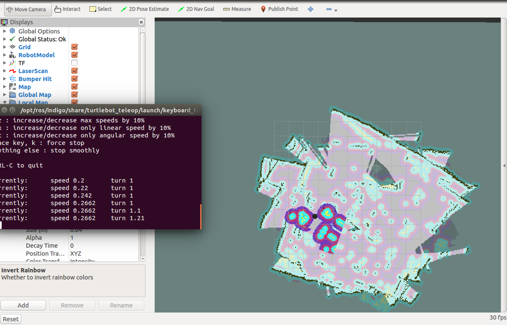

Building a Map using Kenict sensor¶
In this tutorial you will learn how to build your own map using Kenict sensor attached to your turtlebot.
Warning
Make sure that you completed installing all the required packages in the previous tutorials, your network set-up is working fine between the ROS Master node and the host node.
In order to connect the Kenict sensor with the ROS Indigo environment you can type the following three commands in your .bashrc file:
export TURTLEBOT_3D_SENSOR=kenict
export TURTLEBOT_BASE=kobuki
export TURTLEBOT_STACKS=hexagons
Then save, exit and close the terminal.
On you host node(your work station) run the following commands in separate terminals:
roscore
roslaunch turtlebot_bringup minimal.launch
roslaunch turtlebot_navigation gmapping_demo.launch
roslaunch turtlebot_rviz_launchers view_navigation.launch
roslaunch turtlebot_teleop keyboard_teleop.launch
Warning
Connect to the Master node using the ssh turtlebot_PC_name@TURTLEBOT_IP command before running any command in every terminal you use, except for the RViz command run it in a normal terminal.
Start moving the robot around and watch the RViz simulator as the map starts to show up.
Finally you will end-up with a map looking like this one:
You can save the map you just created by running the following command:
rosrun map_server map_saver -f /tmp/my_map